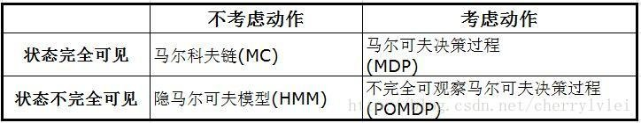
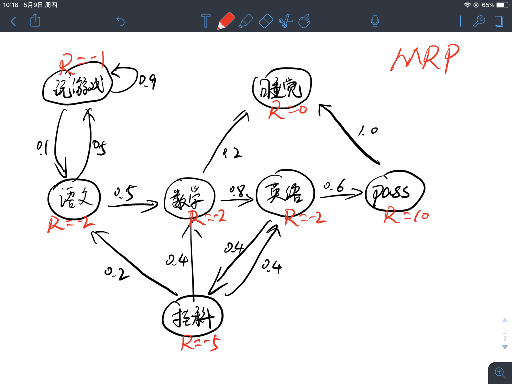
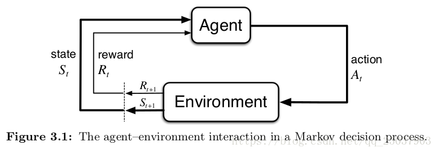

强化学习之MDP马尔科夫决策过程
每每提到强化学习，最先接触的理论肯定是马尔科夫决策过程（MDP，Markov Decision Process），为什么总提到MDP呢？并不是只有我一个人有这个疑问。
百度上没有人提出这样的问题，可能是大家理解得都比较透彻吧，于是在Google查到相关提问和解释。
What is the relationship between Markov Decision Processes and Reinforcement Learning?
In Reinforcement Learning (RL), the problem to resolve is described as a Markov Decision Process (MDP). Theoretical results in RL rely on the MDP description being a correct match to the problem. If your problem is well described as a MDP, then RL may be a good framework to use to find solutions. That does not mean you need to fully describe the MDP (all the transition probabilities), just that you expect an MDP model could be made or discovered.
Conversely, if you cannot map your problem onto a MDP, then the theory behind RL makes no guarantees of any useful result.
One key factor that affects how well RL will work is that the states should have the Markov property - that the value of the current state is enough knowledge to fix immediate transition probabilities and immediate rewards following an action choice. Again you don’t need to know in advance what those are, just that this relationship is expected to be reliable and stable. If it is not reliable, you may have a POMDP. If it is not stable, you may have a non-stationary problem. In either case, if the difference from a more strictly defined MDP is small enough, you may still get away with using RL techniques or need to adapt them slightly.
The general relationship between RL and MDP is that RL is a framework for solving problems that can be expressed as MDPs.
MDP是当前强化学习理论推导的基石，对强化学习来说，一般以马尔科夫决策过程作为形式化问题的手段。也就是说，对于目前的绝大部分强化学习算法，只有可以将问题抽象为MDP的才可以确保算法的性能（收敛性，效果等），对于违背MDP的问题并不一定确保算法有效，因为其数学公式都是基于MDP来进行推导的。
马尔科夫性
马尔科夫性质（英语：Markov property）是概率论中的一个概念，因为俄国数学家安德雷·马尔科夫得名。当一个随机过程在给定现在状态及所有过去状态情况下，其未来状态的条件概率分布仅依赖于当前状态；换句话说，在给定现在状态时，它与过去状态（即该过程的历史路径）是条件独立的，那么此随机过程即具有马尔科夫性质。马尔科夫性-百度百科
马尔科夫性，也就是无后效性：某阶段的状态一旦确定，则此后过程的演变不再受此前各状态及决策的影响。也就是说，未来与过去无关。
具体地说，如果一个问题被划分各个阶段之后，阶段$k$中的状态只能通过阶段$k+1$中的状态通过状态转移方程得来，与其他状态没有关系，特别是与未发生的状态没有关系，这就是无后效性。
公式描述：
强化学习问题中的状态也符合马尔科夫性，即在当前状态$s_{t}$下执行动作$a_{t}$并转移至下一个状态$s_{t+1}$，而不需要考虑之前的状态$s_{t-1},…,s_{1}$。
举一个不恰当的例子：

假设天气预测符合马尔科夫性，如果以每天表示为一种状态，即周一、周二到周日。今天（5月8日，周三）天气为晴，明天（周四）会不会下雨只与今天的天气有关，而与之前周一、周二的天气状况无关。如果以时间节点表示为一种状态，即2点、5点、8点等，如图2点的温度为15.8°C,那么下个时间点5点的气温如何只与2点的温度有关系。
强化学习中默认状态的转移是符合马尔科夫性质的，状态具体是什么，需要根据不同的问题进行不同的设定。
马尔科夫过程
马尔科夫过程是随机过程的一种，什么是随机过程呢？简单来说，一个商店从早上营业到晚上打烊这段时间，根据每个时间点店内顾客的人数所组成的序列就是随机过程。随机过程根据时间节点$T_{t}$取到的值是一个变量。
马尔科夫过程是满足马尔科夫性的随机过程，它由二元组$M=(S,P)$组成，且满足：
- S是有限状态集合
- P是状态转移概率矩阵
状态与状态之间的转换过程即为马尔科夫过程。虽然我们可能不知道P的具体值到底是什么，但是通常我们假设P是存在的（转移概率存在，如果是确定的，无非就是概率为1），而且是稳定的（意思是从状态A到其他状态的转移虽然符合某个分布，但是其转移到某个状态的概率是确定的，不随时间变化的）。
这里说的有限二字我有自己的理解，在最开始的强化学习研究中，解决的都是表格式的问题，也就是状态的数量是有限可取的，但是后续强化学习研究的也有连续状态空间的问题，算法如DQN,PG,PPO等。状态的数量并不是有限的，但是其向量维度则是固定的、有限的，而且也同样符合马尔科夫性质，因此我认为这里定义的有限并不是说状态数量有限，而是状态维度有限。因为好像没有无限马尔科夫的叫法，所以姑且这么解释一下。
马尔科夫过程有如下分类：

状态转移矩阵
状态转移矩阵由许多状态转移概率组成，状态转移概率是指从一个马尔科夫状态$s$转移到下一个状态$s’$的概率。
公示表示：
等同于：
假设有1到n个状态，将所有的状态从上到下、从左到右排列，组成一个$n \times n$的矩阵，那么其状态转移矩阵如下所示：
其中，每行元素相加等于1，矩阵的总和为状态的数量n。
对于可数状态，$\sum_{s’=1}^{n}\mathcal{P}(s’|s)=1$
对于不可数状态（连续状态),$\int_{s’}\mathcal{P}(s’|s)=1$
举一个马尔科夫过程的例子:
假设一个学生，他目前在学习语文科目，那么他接下来进行的活动过程如下图所示，游戏的吸引力很大，所以他有50%的概率在学完语文去玩游戏，并且很容易沉迷其中，图示玩游戏这个循环有90%的可能性，他还可以选择学习其他科目或者去睡觉，最终学习结束之后是否能通过考试也是有一定的概率的，这些状态之间转移的概率即为状态转移概率。

如果把例子中的各项状态用字母表示，将其表示为：
那么其状态转移矩阵$\mathcal{P}$可以表示成：
马尔科夫链与Episode
Episode可以翻译为片段、情节、回合等，在强化学习问题中，一个Episode就是一个马尔科夫链，根据状态转移矩阵可以得到许多不同的episode，也就是多个马尔科夫链。
强化学习问题分两种：
- 如果一个任务总能达到终态，结束任务或者开启下一轮任务，那么这个任务就被称为回合任务，也就是episode任务。例如，让一个智能体学习如何下围棋，围棋棋盘只有那么大，游戏定会终局，所以是一个回合式任务。
- 如果一个任务可以无限持续下去，永远不会结束，即永远在训练当中，那么这个任务就被称为连续性任务。例如，教会一辆车能够进行自动驾驶就是一个连续性任务，不要钻牛角尖说能源会耗尽，车子会磨损，我们只聚焦问题与环境本身，不涉及其他非稳定因素。
在上边举的例子中就是一个回合式任务，因为无论这个序列有多长，最终都会达到终态-“睡觉”。
根据上述例子我们可能采样出如下episode：
- $B-C-D-E-C-G$，即“学语文→数学→英语→考试没通过,挂科→继续学数学→睡觉”
- $B-A-A-…-A-B-C-G$，即“学语文→玩王者荣耀→玩刺激战场→玩OverCooker→玩守望先锋→玩英雄联盟→玩CS:GO→…→看一会儿数学→睡觉”。（仿佛就是我自己嘛！）
马尔科夫奖励过程
马尔科夫过程（Markov Process）主要描述的是状态之间的转移关系，在各个状态的转移过程中赋予不同的奖励值就得到了马尔科夫奖励过程。
定义：马尔科夫奖励过程（Markov Reward Process, MRP）由一个四元组组成$(S,P,R,\gamma)$
- $S$代表了状态的集合(也是维度有限的)
- $P$描述了状态转移矩阵$\mathcal{P}_{ss’}=\mathbb{P}[S_{t+1}=s’|S_{t}=s]$
- $R$表示奖励函数，$R(s)$描述了在状态$s$下的期望(立即)奖励，$\mathcal{R}(s)=\mathbb{E}[R_{t+1}|S_{t}=s]$
- $\gamma$表示衰减因子,即discounted factor,$\gamma\in[0,1]$
$\gamma$是用来计算累计奖励回报的,表示我们有多看中现在或者未来,为什么这么说呢?假设我们现在要计算一个episode始态$S_{0}$的奖励值$V(S_{0})$,不涉及具体公式推导的说,我们应该把$S_{0}$状态后续的奖励全部加和,这样就得到了对始态$S_{0}$的值估计,这些后续奖励的值的权重都是1,或者说此时$\gamma=1$,但是当前状态对很多步之后的状态未必影响很大,我们这样计算过来并不能完全表示一个状态的值,那么我们应当顺势减少距离远的状态的权重,此时$\gamma\lt1$
- 当$\gamma=0$时,状态$S$的值完全由其转移的期望立即奖励表示,即一点都不关心未来
- 当$\gamma=1$时,状态$S$的值由以当前状态为始态,运行至终态所得到的所有立即奖励加和的值表示,即未来与现在同等重要
- 当$0 \lt\gamma \lt1$时,状态$S$的值是前两个模式的trade-off,即对未来看重的程度由$\gamma$决定
这只是我们的直观感受,其实是为了数学便利（虽然我也不知道具体哪里提高了数学便利，但是在有些情况下会使值函数更快迭代收敛这是真的）。
注：也有很多地方将MRP表示为三元组，即去掉$\gamma$，但这不影响我们对这个过程的理解，下边的MDP也是一样，无论是三元组、四元组、还是五元组，只要能描述过程的性质就可以。
将上述马尔科夫过程的例子升级为马尔科夫奖励过程如下图所示:

奖励值定义为:
这么定义奖励并没有什么复杂的含义,在这个例子中就拿身心愉悦程度来定义吧,学习固然是枯燥无味的,所以给予负奖励-2,玩游戏虽然会心情放松,但是始终面临着考试的压力,其实并不轻松,所以给予负奖励-1,挂科最痛苦为-5,考试全pass最开心为+10。
在马尔科夫过程中的状态转移加入相应的奖励值即为马尔科夫奖励过程。
马尔科夫决策过程
马尔科夫决策过程(Markov Decision Process, MDP)相比马尔科夫奖励过程多了一个动作$A$,它可以用一个五元组$(S,A,P,R,\gamma)$表示:
- $S$代表了状态的集合(也是维度有限的)
- $A$代表了决策过程中动作的集合(维度有限的)
- $P$描述了状态转移矩阵$\mathcal{P}_{ss’}^{a}=\mathbb{P}[S_{t+1}=s’|S_{t}=s,A_{t}=a]$
- $R$表示奖励函数，$R(s)$描述了在状态$s$下执行某动作的期望(立即)奖励，$\mathcal{R}(s,a)=\mathbb{E}[R_{t+1}|S_{t}=s,A_{t}=a]$
- $\gamma$表示衰减因子,即discounted factor,$\gamma\in[0,1]$
MDPs是一个从交互中达成目标的强化学习问题的一个直接的框架。学习者和决策者叫做Agent。Agent进行交互的其它一切Agent之外的东西都叫做环境。Agent不断的选择动作，而环境也给出相应的反应，并且向Agent表现出新的状态。环境同时也给出一个数值作为反馈。Agent的目标就是通过选择不同的Action来最大化这个反馈值。

强化学习所研究的内容就是得到一个状态$S$到动作$A$的映射关系,因此策略Policy可以表示成
注意:
你可能会认为,在马尔科夫奖励过程(MRP)中没有定义动作,但是其实是包含动作的,因为每个状态有多个转移的下一状态,其实就是多个动作嘛！
很多文章会将有限MDP分开来讲，有限MDP即状态、动作和奖励值都只有有限个元素，对于有限MDP最优策略有唯一解，但是现实世界中任务复杂，因此大多数深度强化学习算法并不局限于解决有限MDP问题，因此本文不将MDP分情况来讲，即默认基于MDP的最优策略至少有一个解。
没错,的确是这样的,MRP中也包含动作,但是我们并不关心,为什么这么说呢?因为就算每个状态可以执行多个动作,但是其每个动作所能转移到的状态是确定的,不确定的只是动作的选择,而不是动作的转移,而MDP中不确定的却是动作的转移,即执行动作所转移的下一状态是有一定概率的.什么意思呢?拿之前MRP的例子来说,语文状态有两个状态可以转移,数学和玩游戏,概率分别是0.5,但是当确定一个转移方向的时候(图中的箭头),其转移结果是确定的,获得的奖励也是确定的,但是在MDP中,执行动作导致转移的结果都未必是确定的.需要注意的是,MRP是属于MDP的,MDP执行动作并不一定必须是随机的.
接下来,我们将MRP的例子转换至MDP, 为了方便理解而又不增加示例的复杂性,不妨将”挂科”这个状态看作是一个动作,因为这个节点正巧入度为1,姑且就认为从英语到挂科的这个箭头是英语状态所能执行的动作.如图所示:

比较两个图可以发现区别,我把这个不确定的动作标为实心黑圆圈,这位刻苦的同学在学习完英语之后还想继续学习,但是他感觉三门科目都差不多了,于是他也很迷茫,他执行”学习”这个动作时的转移状态有三种:学语文、学数学、学英语.概率分别是:0.2、0.4,、0.4.这下就明白为什么我们要在MDP中加入动作$A$了吧,如果还不明白,请接着看下边的内容.
顺便说一下,这个时候的转移矩阵已经不是简单的二维了,当然也可以用二维来表示,假设总共有$n$个状态,每个状态有$m$个动作,那么其行数为$n\times m$,即遍历所有的状态和动作,得到$n \times m$个状态-动作对$(s,a)$,其列数还是$n$.当然,也可以用一个三维tensor来表示,行和列都是$n$,第三维深度为动作的数量m$,很好理解.
网上有写MDP在给定策略下会退化为MRP,我对此不置可否,认为此种说法不够严谨,因为即使说在某状态s下选择的动作a是确定的,并不意味着其转移结果是确定的.
回报 Return
在强化学习问题中，总是提到回报二字，论文中出现Return或者Discounted Return，我们已经知道奖励是什么，奖励就是转移到某个状态或者执行了某个动作之后转移至某个状态所获得的值$r$.
回报就是由某时刻$t$之后决策序列所获得的奖励值经过一定规则计算出来的数值.
公式描述:
.其中,$T$表示一个episode达到终态的时间点.
像之前介绍的一样,我们可能对未来有不同的看重程度,于是引入折扣因子$\gamma$的回报表示为:
其中,$ 0\leq\gamma \leq1$
可以推出回报有如下形式:
策略 Policy
我们一般使用$\pi$来表示一个策略,使用$\pi(a|s)$来表示某状态$s$采取动作$a$的概率,公示表示为:
策略完整定义了智能体在所有状态下的所有行为和其概率.
给定一个MDP和一个策略$\pi$,采样的状态序列
是一个马尔科夫过程$\lt S,P \gt ^{\pi}$,
采样的状态、奖励序列
是一个马尔科夫奖励过程$ \lt S,P,R,\gamma \gt^{\pi}$,
采样的状态、动作、奖励序列
是一个马尔科夫决策过程$ \lt S,A^{\pi},P,R,\gamma \gt^{\pi}$.
注意:在编程时一般以四元组$(s,a,r,s’)$为单位存储”经验”
$\pi$策略下$s\rightarrow s’$转移概率由期望计算得$P_{ss’}^{\pi}=\sum_{a\in A}\pi(a|s)P_{ss’}^{a}$,$s$状态下的期望立即奖励为$R_{s}^{\pi}=\sum_{a\in A}\pi(a|s)R_{s}^{a}$.
上述例子中
状态转移概率可以描述为：在执行策略$\pi$时，状态从$s$转移至$s’$的概率等于执行该状态下所有行为的概率与对应行为能使状态从$s$转移至$s’$的概率的乘积的和。
奖励函数可以描述为：在执行策略$\pi$时获得的奖励等于执行该状态下所有行为的概率与对应行为产生的即时奖励的乘积的和。
强化学习的目标就是最大化期望回报,相应的结果就是找到从状态空间$S$映射到动作空间$A$的最优策略,重点是,如何建立回报与策略之间的联系呢?